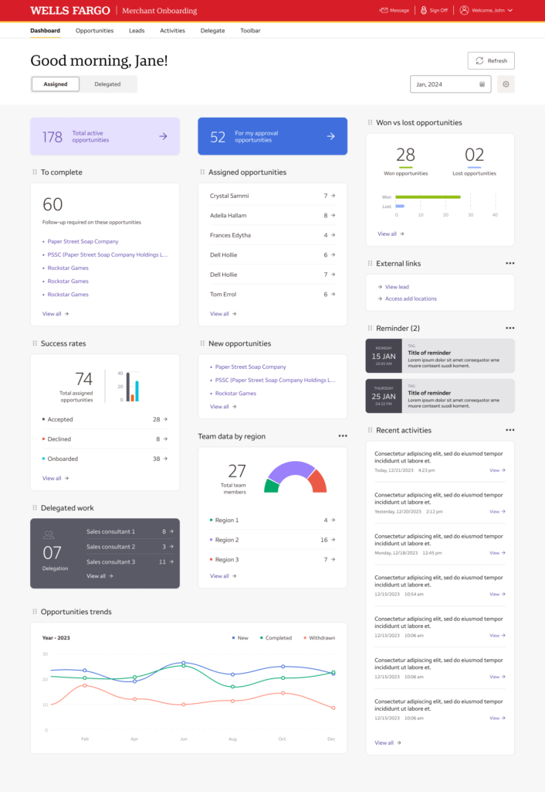
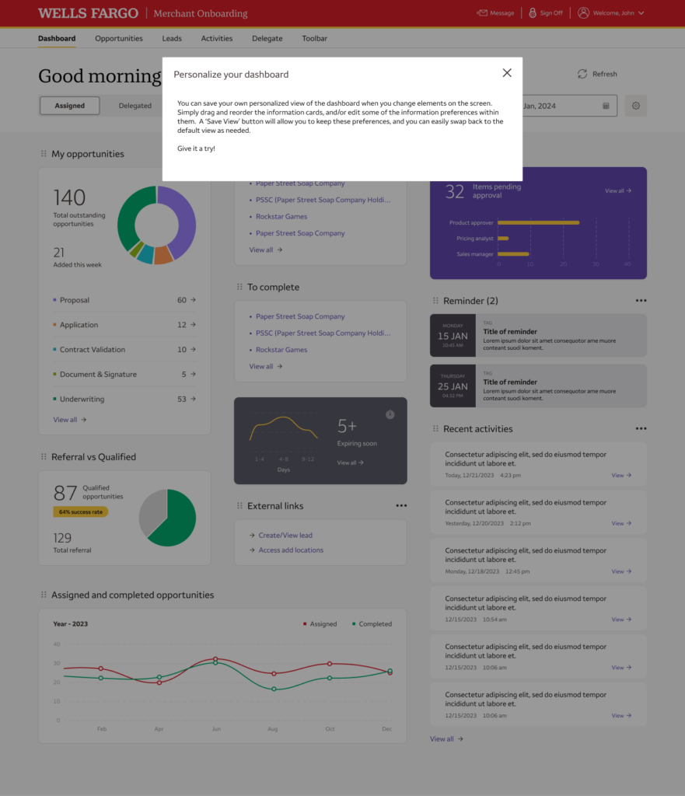
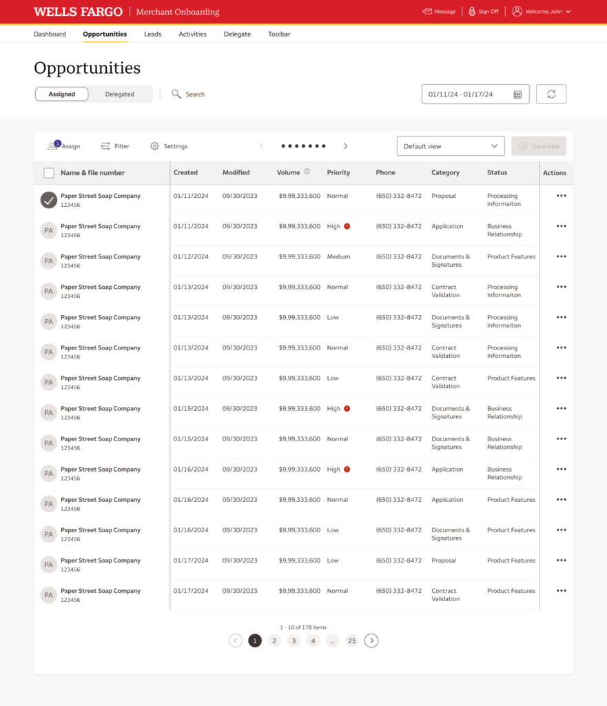
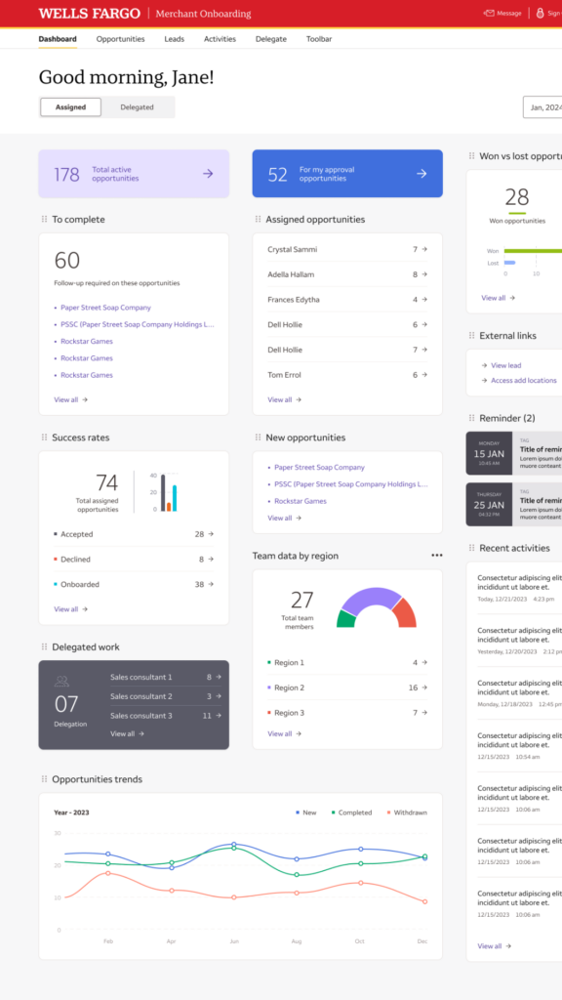

Merchant Services · Wells Fargo
Merchant Services: concept to executive demo in weeks
The challenge
In the second week of November, our team was asked to design a responsive, user-controlled dashboard that leveraged the existing Merchant Services onboarding design system and components — with executive leadership expecting a live demo by mid-January.
Confidentiality Notice: Visuals have been recreated using AI to protect confidential information while accurately representing my design work.

Merchant Services dashboard — a personalized, at-a-glance view of active opportunities, success rates, and team performance.
The approach
Within two weeks we had interactive prototypes ready for initial user testing. We ran three rounds of user feedback before year-end, then partnered closely with Engineering to refine the experience and deliver a working prototype in time for the executive demonstration. Throughout, the dashboard let users personalize their own workspace while staying consistent with the broader onboarding experience.



A live, executive-ready prototype delivered on an aggressive timeline — built through close collaboration across Design, Product, Engineering, and stakeholders.
Why it mattered
This project is one of the clearest examples of what Agile collaboration can do under pressure: a tight window, a cross-functional team, and a willingness to test early and often. It remains one of the most rewarding projects I've had the opportunity to lead.